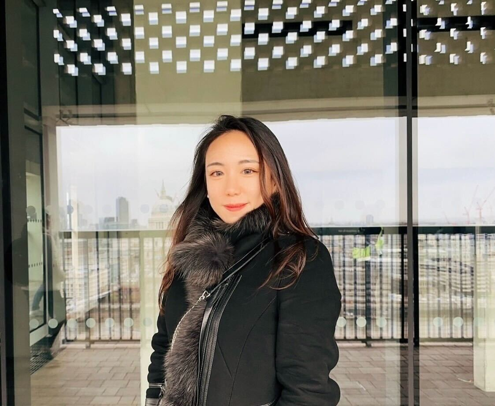

Hi, I'm Chiwon
an award-winning product designer shaping complex systems into clear, useful experiences

About me
I'm a product designer with end-to-end experience across AI, B2B SaaS, emerging technology, and research-driven product development.
My path into UX began through technology and human-centered design, and that combination still shapes how I work today: I care deeply about clarity, rigor, and designing products that help people navigate complexity with confidence.
My work has been recognized by international design awards including Red Dot and A' Design Award, and my research has been presented at CHI, the leading conference in Human-Computer Interaction.
I'm always open to thoughtful design conversations, new opportunities, and collaborations.
Skills
Product design
I use design to turn ambiguous product ideas into clear user flows, interaction systems, and scalable product experiences.
User research
My graduate work at MIT and research experience at the Media Lab shaped a strong foundation in human-centered inquiry and evidence-based design.
Prototyping and systems
I enjoy working through complex service and AI workflows, using prototypes and structured systems thinking to align teams and accelerate decisions.
Web and visual craft
I can design and build responsive web experiences, and I bring a strong visual sensibility shaped by branding, storytelling, and product detail.